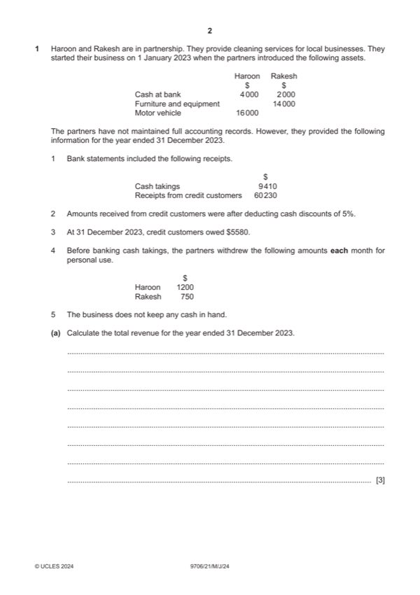

Question 1

Original paper page 2
Part 1(a) — solution
Calculate the total revenue for the year ended 31 December 2023. 3
$101 790 (3) W1
W1
$
Cash takings 9 410
Add drawings 23 400
Mark points
- Include the ideas shown in the solution above.
Part 1(b) — solution
Prepare the statement of profit or loss for the year ended 31 December 2023. 10
Haroon and Rakesh
Statement of profit or loss for the year ended 31 December 2023
$ $
Revenue 101 790 (1)OF
Less expenses
Discounts allowed 3 170 (1)
Cleaning materials ($11 420 – $290) 11 130 (1)
Rent of premises [$8960 – (2/3 $2460)] 7 320 (1)
Electricity charges ($3450 + $430) 3 880 (1)
Loss on vehicle disposal W1 2 700 (1)
Depreciation
Furniture and equipment W2 2 800 (1)
Motor vehicles W3 3 100 (1)
Accountant’s fees 3 800} (1)
Staff wages 29 870}
Vehicle running costs 1 480}
(69 250)
Profit for the year 32 540 (1)OF
University Press & Assessment 2024 Page 9 of 20
9706/21 Cambridge International AS & A Level – Mark Scheme May/June 2024
Mark points
- Include the ideas shown in the solution above.
Part 1(b) — solution
- W1: Loss on disposal: carrying value at time of disposal $14 400 less proceeds $11 700 = $2700 (1)
- W2: Depreciation of furniture and equipment 20% $14 000 = $2800 (1)
- W3: Depreciation of motor vehicles: vehicle 1 $1600 + vehicle 2 $1500 = $3100 (1)
Mark points
- W1: Loss on disposal: carrying value at time of disposal $14 400 less proceeds $11 700 = $2700 (1)
- W2: Depreciation of furniture and equipment 20% $14 000 = $2800 (1)
- W3: Depreciation of motor vehicles: vehicle 1 $1600 + vehicle 2 $1500 = $3100 (1)
Part 1(c) — solution
Prepare an extract from the statement of financial position at 31 December 2023 to show the current assets section 4
only.
Current assets $
Inventory (cleaning materials) 290 (1)
Trade receivables 5 580 }(1)
Other receivables 1 640
Cash at bank 27 930 (1)
Mark points
- Include the ideas shown in the solution above.
Part 1(d) — solution
Calculate the balance on Rakesh’s capital account at 31 December 2023. 6
$33 626 (6) W1
W1
$
Opening capital 16 000 (1)
Less drawings (9 000) (1)
Motor vehicle 15 000 (1)
Interest on capital 2 350 (1)
Share of profits 9 276 (1)
Closing capital 33 626 (1)OF
University Press & Assessment 2024 Page 11 of 20
9706/21 Cambridge International AS & A Level – Mark Scheme May/June 2024
Mark points
- Include the ideas shown in the solution above.
Part 1(e) — solution
Advise the partners whether or not they should maintain a full accounting system using an accounting software 7
package. Justify your answer.
Advantages (Max 3)
Will provide detailed information to support management of business (1)
Facilitates production of documents (invoices, statements etc) (1)
Will provide information required to support bank loan / tax assessment (1)
Will save accountant’s fees (1)
Speed of processing data (1)
Improved accuracy (1)
Disadvantages (Max 3)
Internal / external threats (hacking etc) (1)
Cost of computer equipment and software (1)
Possible training costs (1)
Inconvenience of changing systems (1)
Staff resistance (1)
Advice supported by a comment (1)
Accept other valid responses.
University Press & Assessment 2024 Page 12 of 20
9706/21 Cambridge International AS & A Level – Mark Scheme May/June 2024
Mark points
- Include the ideas shown in the solution above.
Part 1 — solution
April 2023 row
Rights issue 400 000 160 000 560 000
(1)OF (1)OF
Dividend (80 000) (80 000) (1)OF
Revaluation (45 000) (1) (15 000) (1) (60 000)
Profit for year 37 000 37 000 (1)
Balances 1 000 000 360 000 40 000 1 400 000 (1*)OF
Mark points
- Include the ideas shown in the solution above.